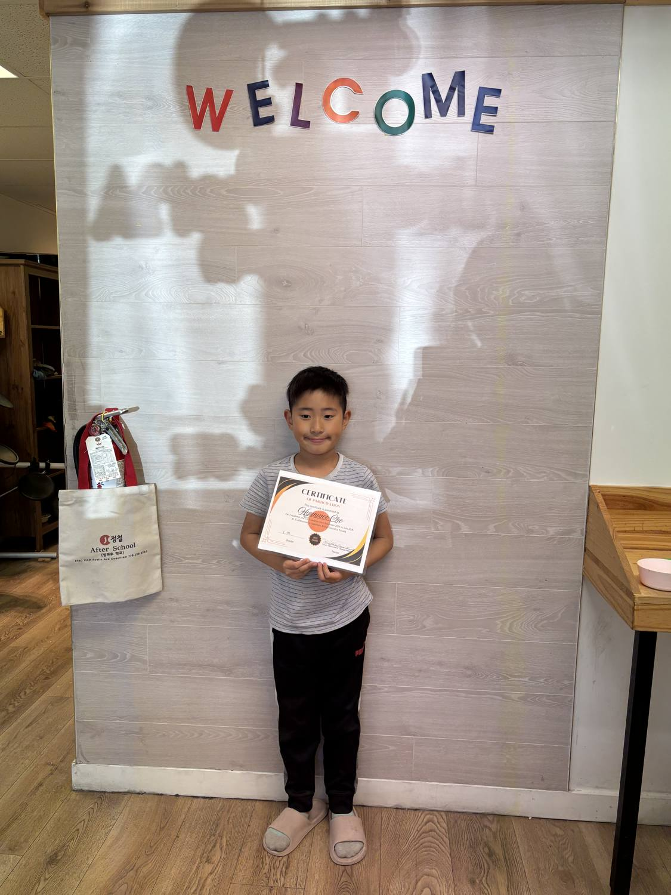
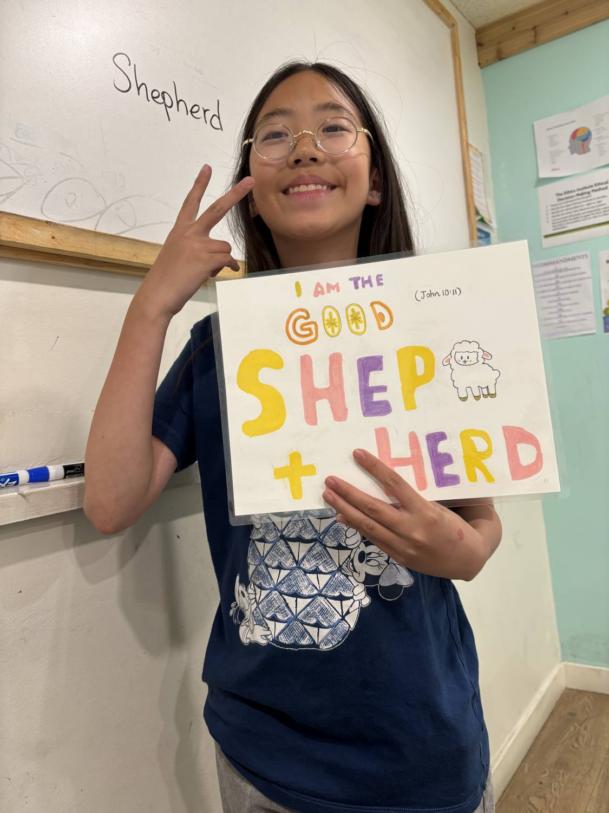
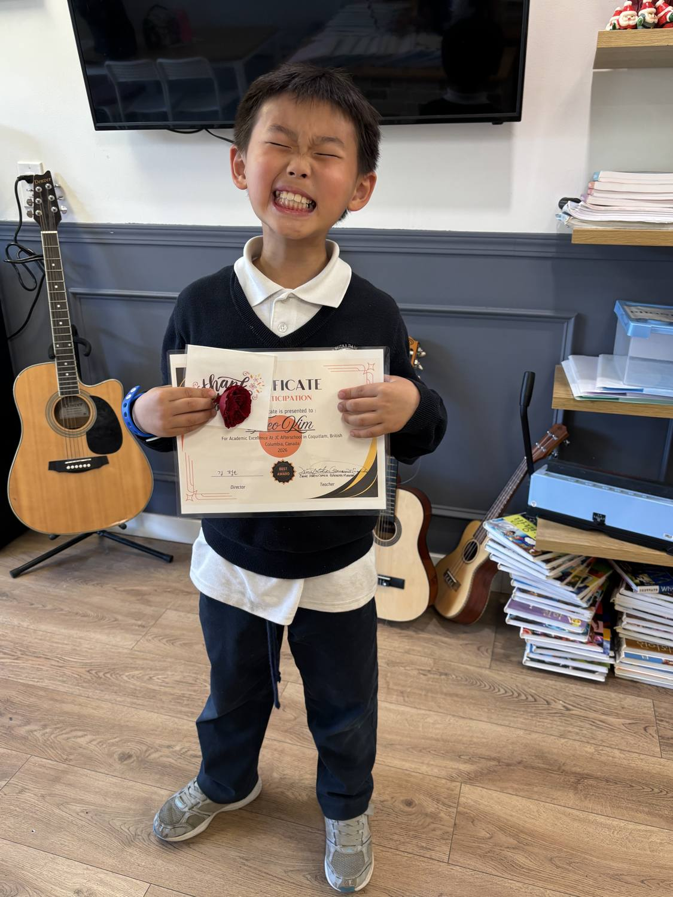
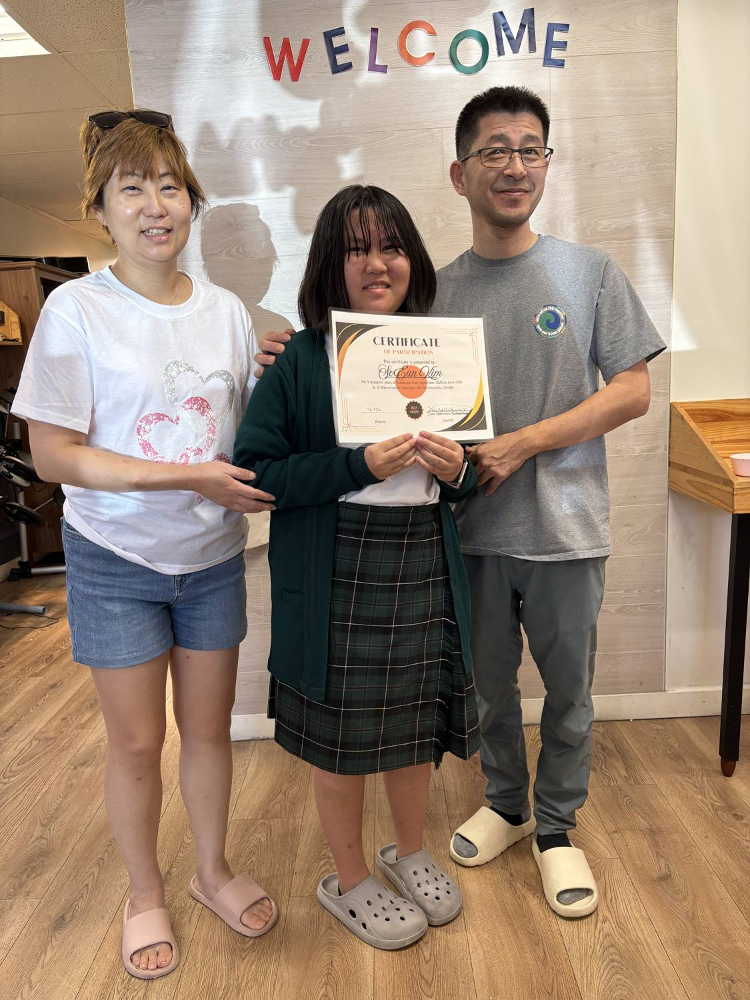

With Love & Blessings — Congratulations, Yooha, Hyunwoo, Theo & So Eun
This week we said a heartfelt goodbye to some very special students — and celebrated their years with us with certificates, artwork, and a whole lot of love. Below is a farewell message from our teacher, Diane, to our beloved students and their families. 🎓
Very beloved students Hyunwoo and Yooha — congratulations on completing three academic years at JC Afterschool Learning Academy. You two are legendary.
We hope to see you both again, and we send you all our blessings. Stay in touch, and always keep your faith and your love of learning. You were a big blessing to our school, with your kind hearts, your enthusiasm, and your many creative contributions. You will be dearly missed.


For Yooha 🙏❤️
May the Holy Spirit always guide you, give you courage, and bless you in all that you do, Yooha. You have great leadership and a rich character. May you be rewarded in life for all the heart, diligence, attention to detail, love, and thoughtfulness that you put into your work every day.

For Theo
God bless you too, dear Theo. You have brought a lot of energy, creativity, and inspiration to our school in a short time. Congratulations on completing this year with us. May you be blessed in everything you do, and we hope to see you and your brother again. Keep taking to heart what you learn. Keep your curiosity and your inspiration to do well and achieve great goals and aspirations.

For So Eun
So Eun — congratulations for completing another year at JC Afterschool as well. You have brought joy to every class with your presence. You have contributed interesting topics, great illustrations and presentations, clear and kind communication, incredible artistic talent, and good cheer. God bless you, protect you, and guide you to keep challenging yourself with new things and shining in excellence as you discover what you can do with the courage and opportunities God gives you.

For Hyunwoo
Dear Hyunwoo — you have confidence, enthusiasm, and a huge heart. You have contributed so much to the lives of your fellow classmates and to your own successes, with your creativity, decisiveness, problem-solving skills, and drive toward excellence. May God bless you to keep up that good spirit within you, and discover great success in whatever you aspire to do. It was a great joy and blessing having you at our school.
A heartfelt thank-you
A heartfelt thank you to Daiyong and Jongeun (Cindy) Kim for your dedication to the work, the students, and the families of JC Afterschool Learning Academy over the years — and especially this year. You have worked together to keep this a welcoming, secure, homey, and supportive place for staff and students alike.
And thank you so much for your kind and encouraging words. We are truly grateful for the love and guidance you have given — your support has meant a lot to our family. ❣️ We are so glad here at JC Afterschool that your children and family came through our programs feeling blessed and supported. Your family deserves the best, and you were such a blessing to us too. Your children gave me so much heartwarming encouragement and inspiration as a teacher — they never failed to brighten my day! You and your children will always be an important part of us. Always!!!